Finding suitable solar farm land for clean hydrogen aviation
Where this started
A summer studying how clean hydrogen flight could really be
I'm Aboud, an aerospace engineering student at Concordia. In 2025 I held an NSERC undergraduate research award on the environmental impact of hydrogen aviation.
Hydrogen emits no carbon dioxide in flight, but making it takes a lot of electricity. So I built a dataset of how electricity is produced around the 20 busiest US general-aviation airports, using the US Energy Information Administration's 2025 outlook.
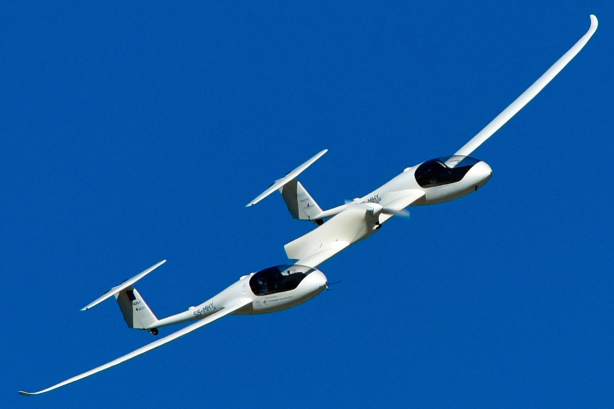

The question now
Could an airport make its own clean power next door?
If the local grid is not clean, the hydrogen is not clean either. A solar farm near the airport would fix that, if there is suitable land.
This project teaches a computer to recognise that kind of land from space.
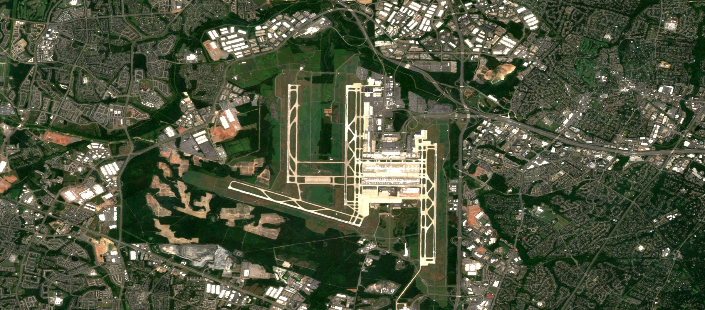
How it works
Four steps, from past solar farms to land near airports
Learn from real solar farms, before they were built
3,472 US solar farms opened between 2019 and 2024. The model studies each site as it looked two years earlier, when it was still bare land.
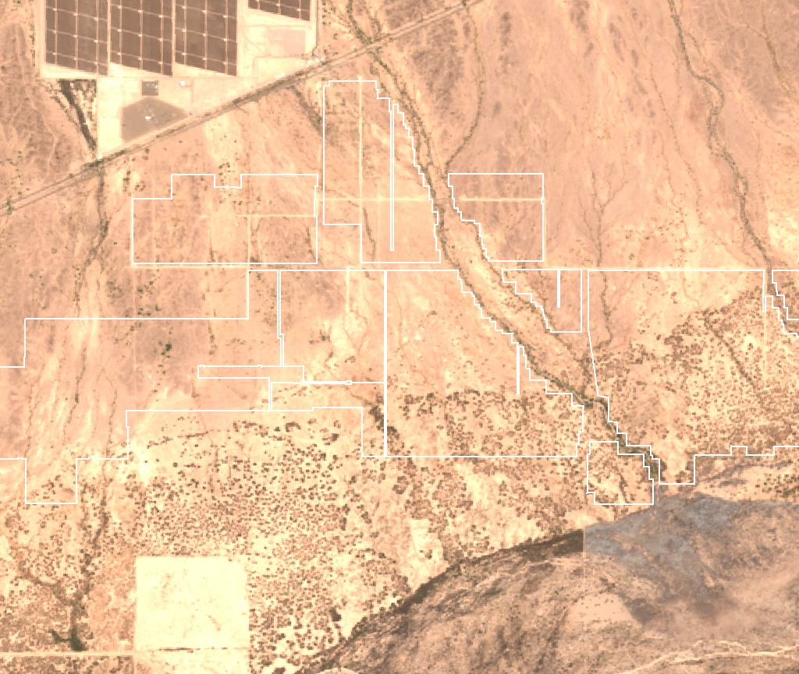
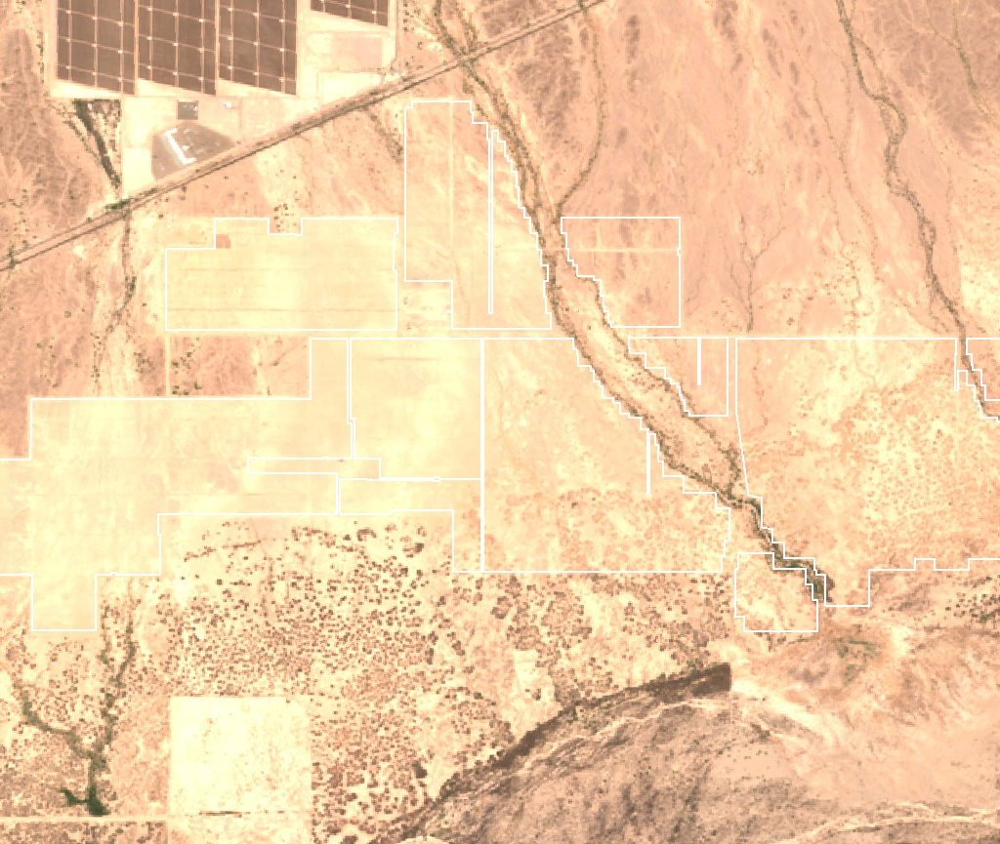
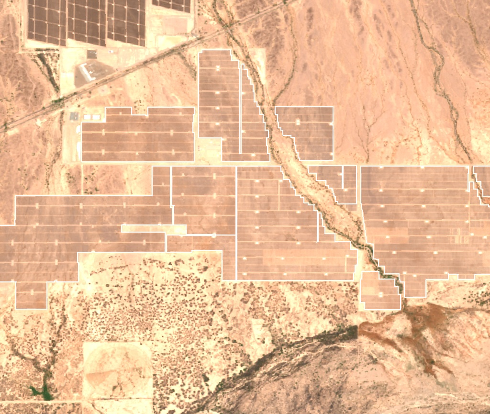
One site in Yuma County, Arizona. White lines mark where the panels were later built.
Turn each patch of land into a fingerprint
AlphaEarth, from Google DeepMind, condenses a year of satellite observations of every 10-metre square into 64 numbers. Similar land gets similar numbers.
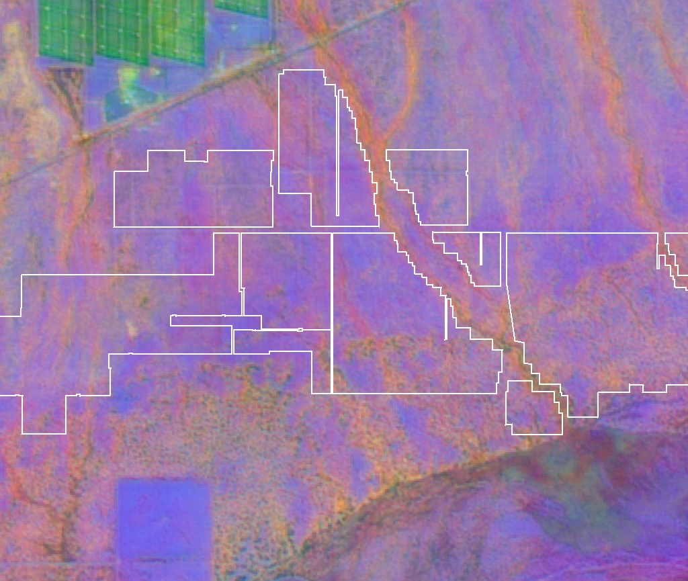
Test it fairly
The model had to tell future solar sites from ordinary land nearby, in US states it had never seen. I compared AlphaEarth with ordinary satellite imagery, and published the pass mark before running anything.
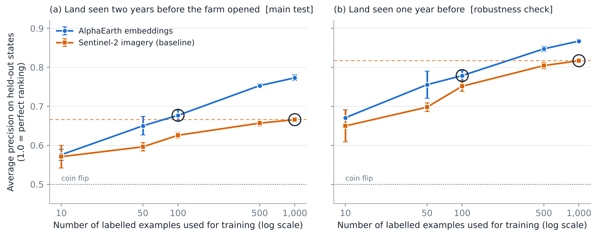
Score (0.5 is a coin flip, 1.0 is perfect) against the number of examples the model learned from. Left: land seen two years before opening. Right: one year before.
Point it at the land around airports
The trained model scored every 10-metre square within 5 km of each airport.
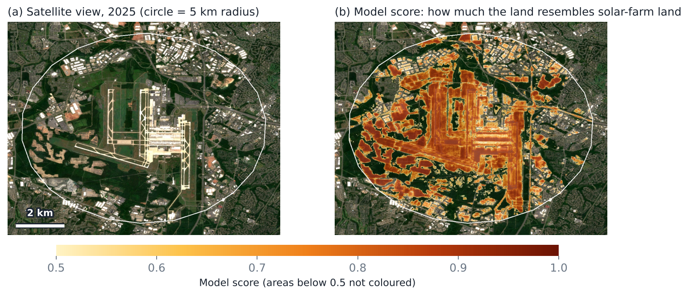
Darker orange means more similar to land where solar farms were later built. The circle looks flattened because of the map projection.
What I found
It learns fast, but it is not ready to choose sites
fewer examples needed. AlphaEarth with 100 examples scored 0.68, about the same as ordinary imagery with 1,000 (0.67).
The score jumps when the model sees land one year ahead, not two. By then the ground is often cleared, so it is spotting construction, not good land.
of real solar land found at the confidence a planner would need. Near airports, much of what it highlights is runways and car parks.
Two harder tests
Does it know more than "open ground", and does it work on future farms?
Against open land only. I removed forests, towns and water from the comparison, leaving fields, grassland and bare ground. AlphaEarth still separated future solar sites (0.73, where 0.5 is chance); ordinary imagery fell to 0.59.
On farms it never saw. On 217 solar farms that opened in 2025, the finished model scored 0.85, better than in testing (0.79).
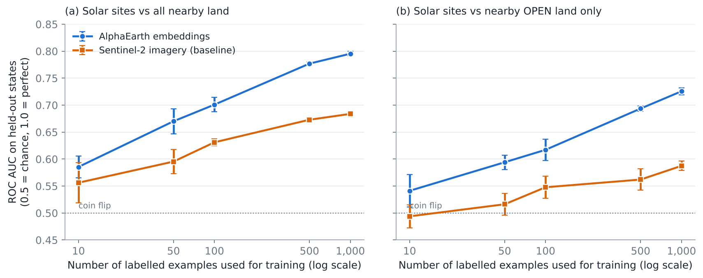
Score (ROC AUC: 0.5 is chance, 1.0 is perfect) against the number of training examples. Right: the same test with only open land as the comparison.
What the land could supply
Enough land for tens of tonnes of clean hydrogen a day, on paper
I removed land that cannot be used (buildings, roads, water, forest, slopes over 5°, existing solar farms and a 500 m band around runways), then converted what was left into solar power and hydrogen.
of usable open land within 5 km of the 20 airports (3.4 to 24.9 km² each).
of hydrogen a day per km² of solar, depending on how sunny the airport is.
less CO₂ per kg than hydrogen made from the local grid (0.55–1.98 kg against 6.4–26.9 kg).
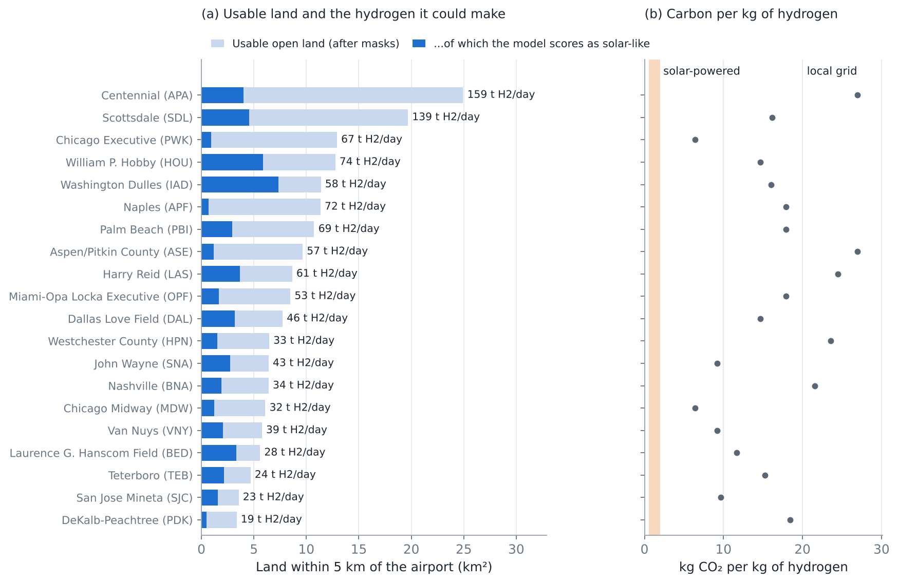
Upper bounds: they ignore grid connection, ownership, zoning and cost. Solar output from NLR PVWatts; 68 MW per km² is the median of the 3,472 real farms; 55 kWh per kg of hydrogen is the DOE electrolyser figure; grid carbon from the EIA 2025 outlook used in my NSERC work (power plants only). Palm Beach's runways could not be masked, so its land is overstated.
What this assumes
- Good solar land shares traits a satellite can see: flat, open, unshaded.
- Where farms were built before is a fair guide to where they could be built.
- Two years before opening, the land still looks as it did when chosen.
- Land within 5 km is close enough to supply the airport.
- Solar farms near airports pack as densely as the median US farm.
What it cannot see
- Power lines, zoning, ownership and price.
- Real land is almost all ordinary, so real-world accuracy would be lower than in the test.
- These 20 airports are mostly surrounded by city.
Next steps
Making the map useful
Distance to power lines and substations.
Protected land, wetlands and airport safety zones.
All US general-aviation airports, not 20.
Compare with what hydrogen aircraft at each airport would need.
Tools and data
Built with open data and free tools
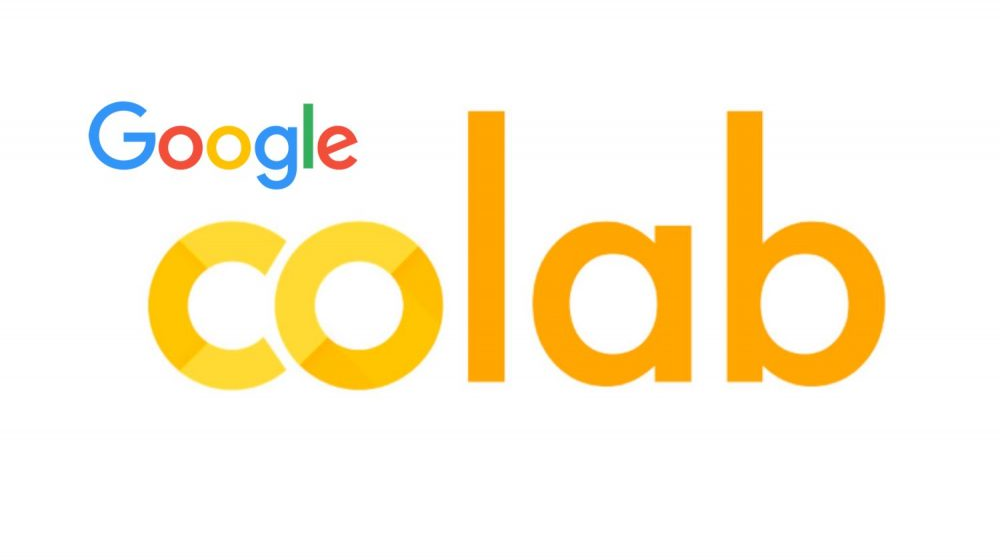
Google ColabRuns the code in the cloud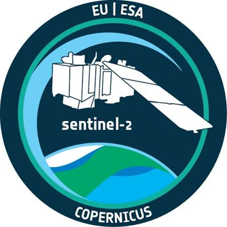
Sentinel-2The comparison imagery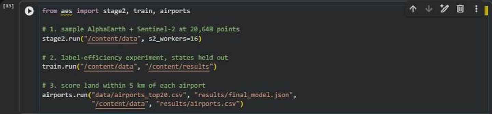
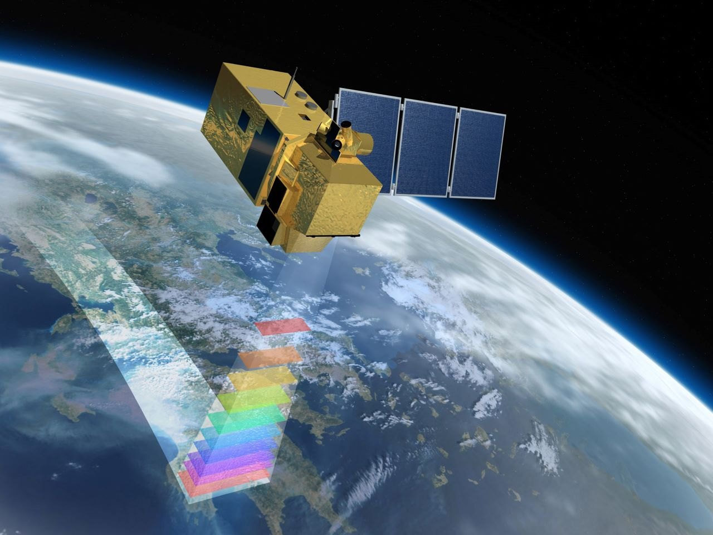